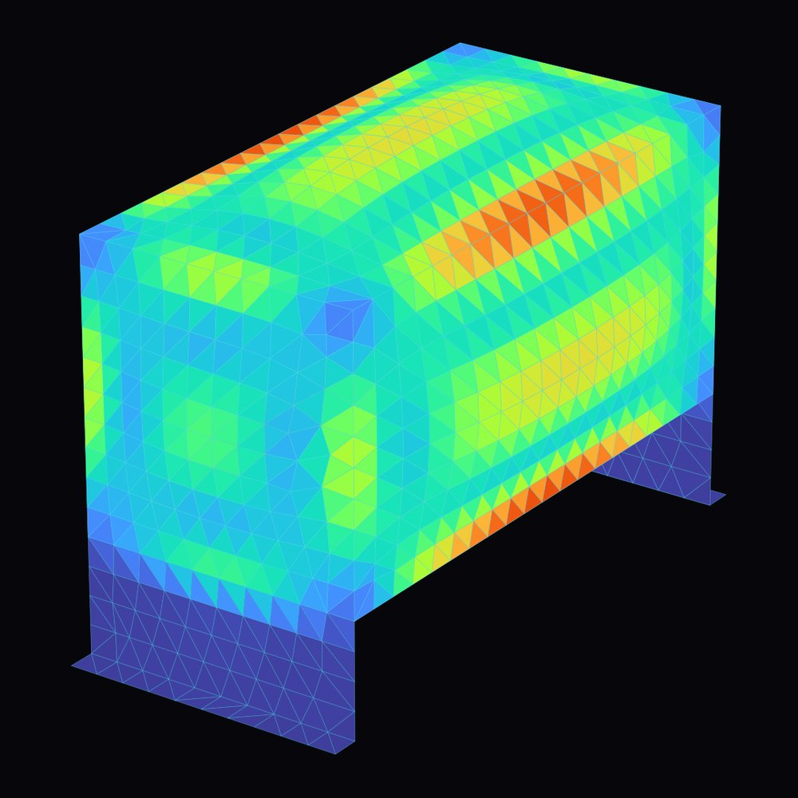
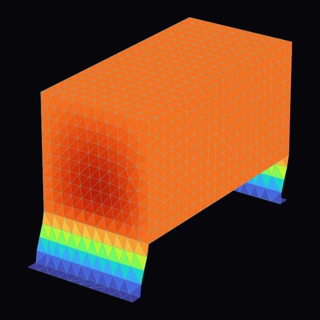
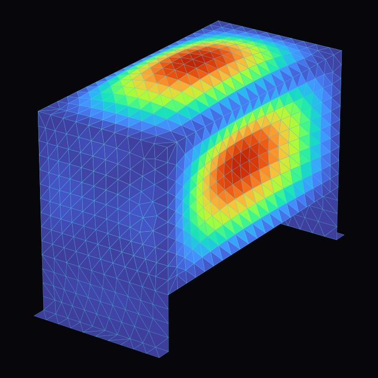
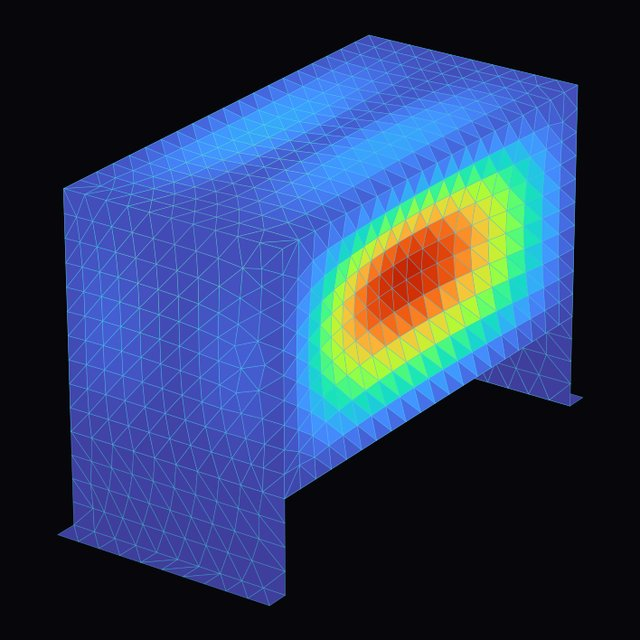
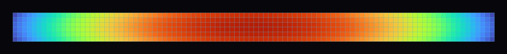
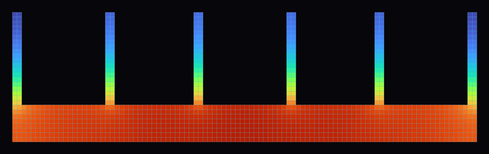
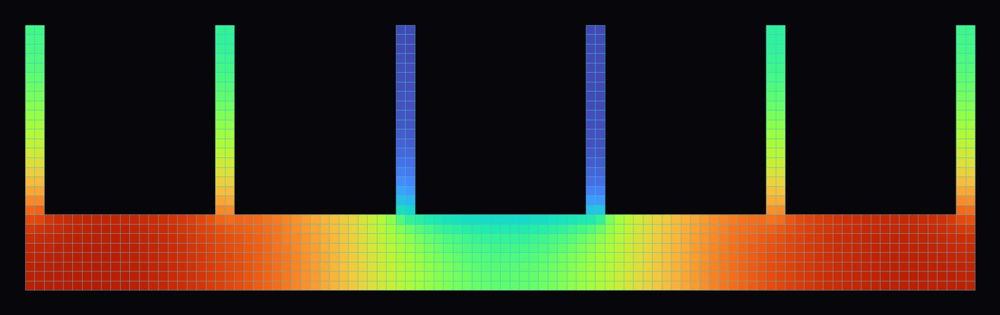

Simplifier sans trahir
Symétries, 2D plutôt que 3D, contact parfait : chaque hypothèse fait gagner du temps de calcul, mais il faut savoir ce qu'elle coûte en précision.
Projet 06 · Modélisation
Deux études menées en binôme, en travaux pratiques à l'ECAM-EPMI : vérifier qu'une citerne en aluminium résiste à sa pression de service, puis dimensionner le radiateur d'un microprocesseur pour qu'il reste sous 85 °C. Dans les deux cas, la démarche est la même : poser les hypothèses, construire le modèle, l'exploiter, puis décider.
Une cuve de 1000 × 500 × 500 mm, soudée sur un véhicule industriel par deux pattes, soumise à 0,25 bar de pression interne.

Vérifier la tenue de la cuve : la contrainte de Von Mises doit rester sous la limite élastique de l'aluminium (135 MPa).
La cuve tient, avec une marge d'environ ×2 sur la limite élastique. Les grandes parois planes fléchissent sous la pression : la contrainte se concentre le long des arêtes, là où elles se raccordent entre elles.



Pourquoi les modes comptent. Le premier mode, à 31,7 Hz, correspond au balancement de la cuve sur ses pattes. Si le véhicule vibre à cette fréquence, la cuve entre en résonance : les oscillations s'amplifient et les soudures des pattes travaillent en fatigue, jusqu'au risque de fissuration. Le calcul statique seul ne le montrerait pas.
Dissiper 1,2 W produits par une puce de 50 × 15 × 3 mm sans dépasser 85 °C, avec une ambiance à 20 °C.
La chaleur reste piégée au cœur de la puce.

6 ailettes : 37,8 °C au maximum, bien sous les 85 °C.

Le flux forcé entre les ailettes centrales refroidit le cœur.

Symétries, 2D plutôt que 3D, contact parfait : chaque hypothèse fait gagner du temps de calcul, mais il faut savoir ce qu'elle coûte en précision.
Un calcul n'est fiable qu'une fois le maillage vérifié. Changer la taille des éléments et comparer, c'est le premier réflexe.
L'objectif n'est pas le meilleur chiffre, mais la solution la plus légère qui respecte la limite : 135 MPa pour la cuve, 85 °C pour la puce.